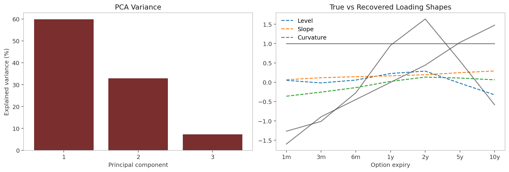

Appendix
The PCA recovery check verifies that the latent level, slope, and curvature modes can be recovered from simulated cube moves before the hedging strategies are compared.

References: Andersen and Piterbarg (2010), Hagan et al. (2002), Rebonato (2002), Bergomi (2016), Avellaneda and Stoikov (2008), Gatheral (2006).